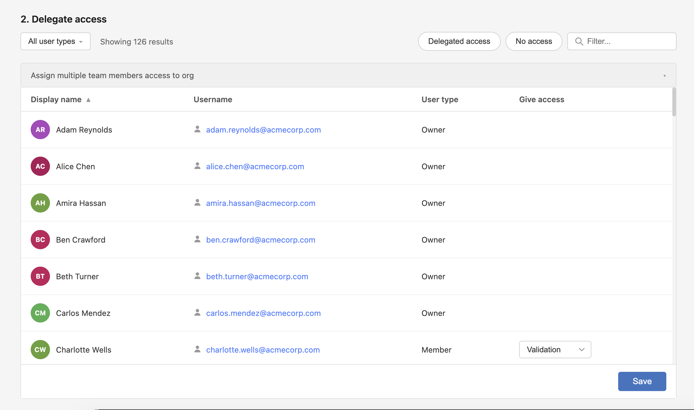
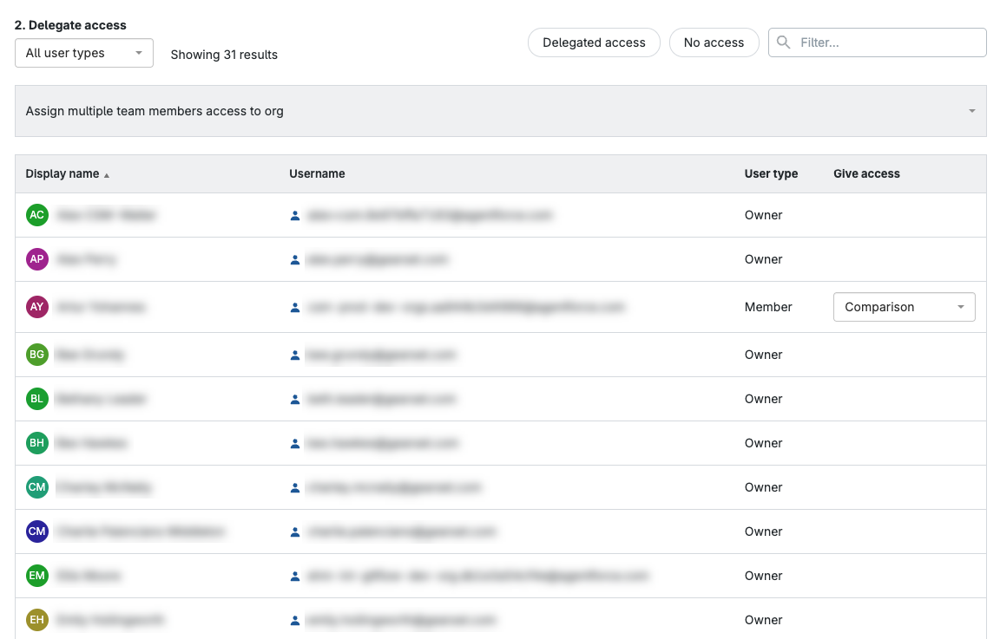
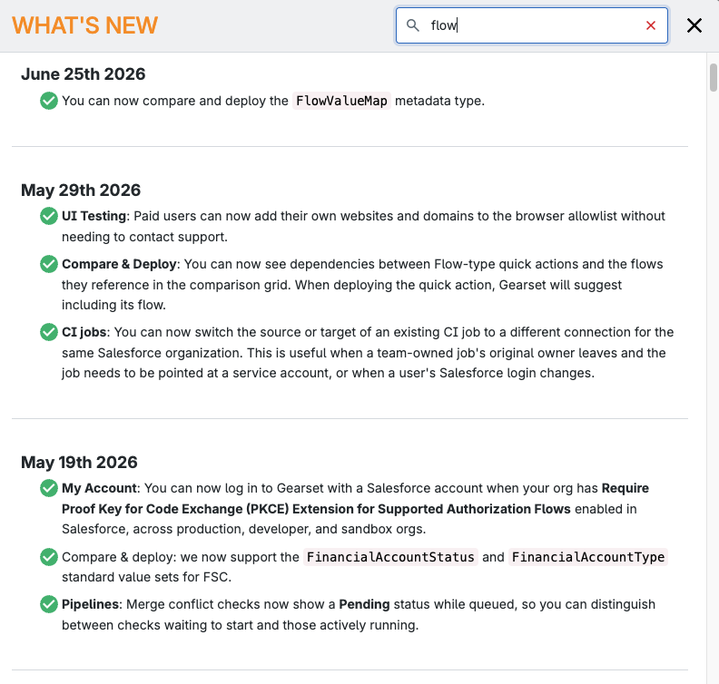
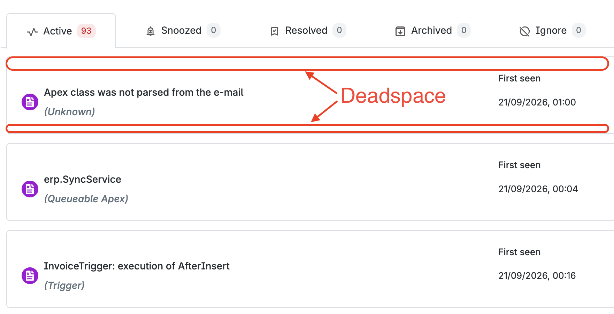
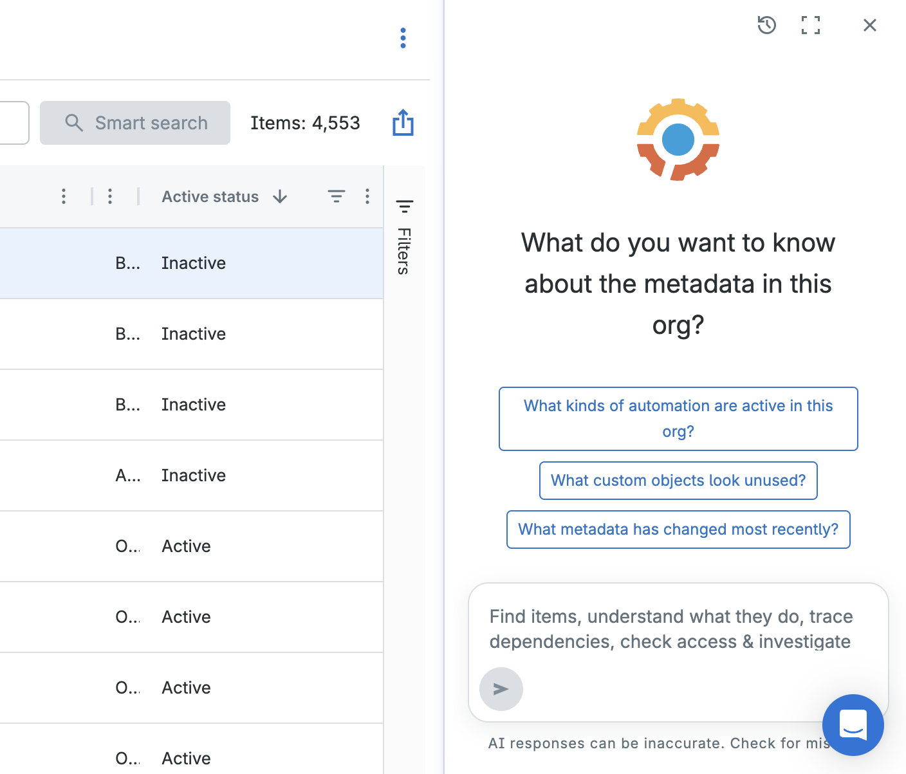

Small UX fixes I identified, prototyped and shipped to production using Claude Code, all from my role as a Customer Success Manager.

The pattern
I'm in Gearset every day, customer calls, live troubleshooting, and walkthroughs of different product areas. That means I hit the same small frictions our users hit.
To address these issues, I went and got access to Claude Code and Gearset's codebase (which took approval and persistence).
I learned the workflows used by the UX team, then built and shipped five fixes to production.
Deep dive
Before Save button hidden at the bottom of the table

31 users listed in full. The Save button sits below every row.
After Save button always visible
126 users in a scrollable table. Save is always visible.
Fine at ten users. Not fine at a hundred and twenty six.
In our product Slack channels I saw that Gearset's largest customer was hitting problems the platform hadn't been designed for (such as assigning licences for a team over 100 people).
Later, I independently noticed the delegate org access page listed every user on the team in one long list. To save, you scrolled past all of them.
I found an existing table component in the platform and reused it here. I raised the PR, worked with Engineering on some small UI tweaks, and it's in production now.
The other fixes
Search term highlighting, What's New
I searched for a release note and then had to scan the results to find my own search term. Now matches are highlighted.
Before Search results weren't highlighted and hard to find

After Search results highlighted and immediately identifiable
Clickable card area, Observability
The card looked clickable but only part of it was, so clicks landed on dead space. Now the whole card is a target.
Before Unclickable dead space on the card

After Full card is clickable
Agent resizing handle
The agent window was resizable but the interaction was hidden. Now it's discoverable.
Before Resizing is completely hidden

After Resizing handle is discoverable and has a hover state
The process
Spot it.
I identify friction from daily product use, log a ticket in Shortcut, and self-assign it.
1Build it.
I create a feature branch, prototype different approaches with Claude Code, and raise a PR.
2Ship it.
I work through Engineering's code review, test in Staging, iterate, and ship to production.
3The ceiling
From my CSM role I can spot friction and ship a fix, but I can't take on more meaningful and higher-impact problems.
I've found the limit of what I can do as a CSM, the work I want to do is that of a dedicated Product Designer.